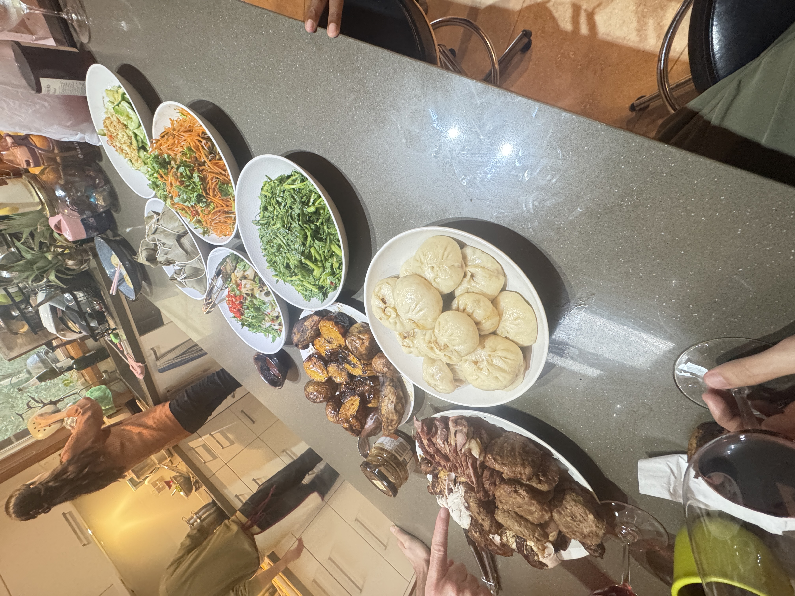

kirby.
gnu | may 12, 2025
This may be my conclusion of a trifecta of prompts after a rather emotional start of the month. I have a Notion Page full of content-ideas but I don’t want to make this as some sort of therapy for me. I’m hoping to diversify whatever I do. I’ll post here again - someday. Hopefully not another year. Maybe tomorrow? Or not.
I hope someday someone will visit these prompts and appreciate me for who I am — and the thoughts and feelings I rarely tell other people. Life is very turbulent, messy, and unpredictable. These serve as a reminder for me that these feelings happened and who I am. Someday I hope someone will appreciate me for who I am.
Quite frankly, I’m always in awe to people who can express themselves so fluidly and without filter. How they are able to dig into their mind right on-the-spot without having a second to think about the question. I guess this is my way of conveying those emotions — words which I will fail to say or forget as I get consumed with life’s turbulent waves all over again.
This one’s about love, healing, and being secure.
Last August of 2024, I went back home from the Philippines. I was very excited at that time because my business mentor and his wife will be going to China for three-months and he tasked me to take care of his dog and live in his apartment. It was the first time I’ll every live, walk, and care for a dog. The dog’s name was Kirby. He’s a rather big and strong German Shepherd-Greyhound mix. He was so cute. He had the eyes of a German Shepherd with the droopy ears of a Greyhound. When he looks at you, he does so with this huge cute eyes just staring at you with his droopy ears going down. Not only that, his shepherd genes gave him these cute eye brows to add to his look. He's so cute. It's like having a small cute doggy that just happens to be half your size.
I took care of Kirby from August until the first week of November of that week. On that week, I felt a sense of peace and love which I’ve never felt before. It wasn’t just the fact that Kirby was there which I felt this. It was also the first time I had a space all to myself. Sure I was still struggling financially to be really comfortable, but there was a level of peace with myself which I’ve never felt before. The cold winter nights, Kirby, and a space I could call my own — it was like a fever dream. For the first time, I felt healed and I was able to love, although it was temporary.
I just now realized that it was through Kirby I knew what being loved means. I began healing from my past self to the point that I had forgotten about him. There was someone who was happy to see me, happy for my existence, who was dependent on me.
During those three months, I felt alive.
Unfortunately, it was just temporary. My mentors came back and I had to move back. I wont lie that it sort of ruined my mental when it happened - but I began dreaming. To dream to go back to that position and to feel again. And so I worked. I worked as much as I can, but much like any immigrant story: it wasn’t easy. And I failed numerous times.
Lots happened from the point I left Kirby up until now. I kept failing and failing to the point that I wonder if it’ll work out. There were times I self-sabotaged, but I eventually healed from that.
A lot had happened over that period of summer until now. It ruined me and made me questions a lot of things about myself.
The Bear is one of my most favorite TV shows of all time. It’s up there with Vince Gilligan’s Breaking Bad and Better Call Saul. The Bear is a story about a highly-talented chef, Carmen “Carmy” Berzatto. Carmy grew up in a very dysfunctional family as portrayed in one of my favorite episodes in television - the dinner scene
Anyway, there’s a series of scenes which I want to talk about (spoilers ahead) which really affected me. It was the night of the grand opening of the restaurant, and Carmy got stuck in the walk-in fridge. What this episode portrayed: self-sabotage. Here’s a series of scene to recount the episode
Scene 1: Claire’s Voicemail to Carmy
Claire is Carmy’s childhood love-interest. Her being the only thing going in Carmy’s life is a massive understatement. Despite all the chaos and toxicity surrounding Carmy’s life, he had Claire. She was there for him, accepted him for all of his faults, and loved him regardless.
In this scene, Carmy was stuck in the fridge and began self-sabotaging because he is failing to be there in a vital opening night. He had investors he needs to satisfy, customers he needs to delight, a team he needs to keep together, and his brother’s legacy to carry — but he felt that he failed in all accounts by being stuck in the fridge.
Carmy hadn’t opened Claire’s voicemail earlier in the day because he was too busy. He did so in this scene. The voicemail was so sweet and sincere and fuck I wish I had heard those words from someone at any point in my life. Claire’s voice, the message, and Carmy’s hand shaking, this really touched my soul because I also felt what I needed to hear.
Unfortunately, Carmy was stuck in the fridge. He wasn’t in the right headspace to hear those words. He dropped the phone immediately after Claire said “I love you.” He felt that he didn’t deserve it, that it’s holding him back.
Scene 2: Carmy to "Tina"
Tina knocked at the door asking Carmy is he’s alright. Carmy went on a rant about how he’s not meant for “it.” While doing so, Tina was called somewhere else and left the fridge door. Carmy felt that he was stupid to pursue a relationship - to pursue something healthy. He felt that he wasn’t meant for it and that he is cursed to work and to be who he is. Unfortunately, Claire heard all of these. “I’m really sorry you feel that way.”
Carmy never meant it. He regretted it immediately.
Scene 3: “Why can’t you just let something good happen for once in your fucking life?”
The reason why I really admire Ebon Moss-Bachrach and Cousin Richie in general is because of this scene. Sometimes I just feel that he was speaking to me at a certain point.
In this scene, Claire left crying and Richie noticed. He went to the fridge door and immediately scolded Carmy. The line “why can’t you just let something good happen for once in your fucking life?” really hits. Unfortunately for Carmy, growing up in a toxic household, he didn’t appreciate the gesture. The two battle it out saying demeaning words to each other. Richie, however had the higher moral ground professing his love for Carmy and that he "needs to hear this shit.”
Despite being less successful than Carmy, Richie was more fulfilled in life. The photo of Carmy stuck in a blue and dark room opposite Richie in a well-lit room is one of my favorite imagery I’ve seen. Each are successful in their own terms, but true happiness was with Richie. Richie loved Carmy enough to see through his bullshit while understanding who he is because of his family. Carmy wasn’t. He grew up in a toxic family. He didn’t know what being loved is and pushed Claire away. He just continued to self-sabotage himself.
This scene taught me something throughout the whole ordeal during the period after I lost Kirby: how to heal from my toxic attachment and how to be secure with myself and how I love.
I had moments where I was Carmy. I get lost on the pressures I have in my life right now to the point that I forget about what’s the point of anything anyway. Nevertheless, I felt that after I left the apartment and Kirby. I wondered if I will ever feel that way again and if that’s the kind of life I will have in the future. It happened a lot of times in the past - it even caused me some potential relationships because of it. I used to ask myself whether I do deserve the things which I want, and whether or not I am cursed to the life I live — the stars’ curse.
Unfortunately, I never had a Claire - or ever received a voice mail which touched who I am. Perhaps I’m just close my heart to people too much. Nevertheless, I was never in a good place. No one’s ever dug deep enough.

“Sometimes, I ask myself what the point of everything anymore. I guess the answer is right in-front of us and we just don’t notice. The challenge is how to make ourselves remember it all the time.”
But, I realized that no one has to dig deep enough, really. Those are my battles, and people can only do so much to help with those battles. The least they can do is to just be there. Claire’s voice mail wasn’t really that deep. She’s just really about Carmy opening the restaurant and had some really touching words to go on-top of it. It was just Carmy himself who’s the issue. Claire can only do so much to help him and he just pushed her away.
I just knew this last weekend right at Mother’s Day.
I saw Kirby again. I went to my mentor’s house as his wife’s parents are going back to China and they were cooking Chinese meals + Steak barbecue. I thought Kirby had forgotten about me and I really thought he won’t miss me.
Kirby immediately ran towards me. He kept on wanting to be touched, scratched, and was generally so playful around me - more than when we were together back then. He never left my side. When he wants to go outside, he would approach me. When he wants to lie down, he does so beside me. My mentor was calling for Kirby at one point, but he wanted to stay right beside me. “Kirby really misses you, you know?” my mentor said.
We went outside for a quick walk. We ran up and down a hill. I took that picture of Kirby beside some Autumn trees. That’s where it hit me: there is a point in everything. It’s just right in-front of us. When I left, Kirby gave a big hug and said good-bye.
At that point, I was really touched at the prospect of being missed. Being missed by a dog I spent time with. Being missed by a dog I loved. I cried beside Kirby because I really needed it. I was so heavy that I just wanted to be missed, and Kirby showed me that. I remembered all the time we spent. It was the first time that Kirby saw me cry.
I left with my mentor’s saying that they’re planning to go to China again for 4-months starting July. Part of me hopes. To love and be at peace again. I hope things work out in the coming weeks.

I hope to be able to feel again in one form or another. I am healed and very secure right now - I got Kirby to owe for that. For the meantime, I’ll eat my steak with some red wine.